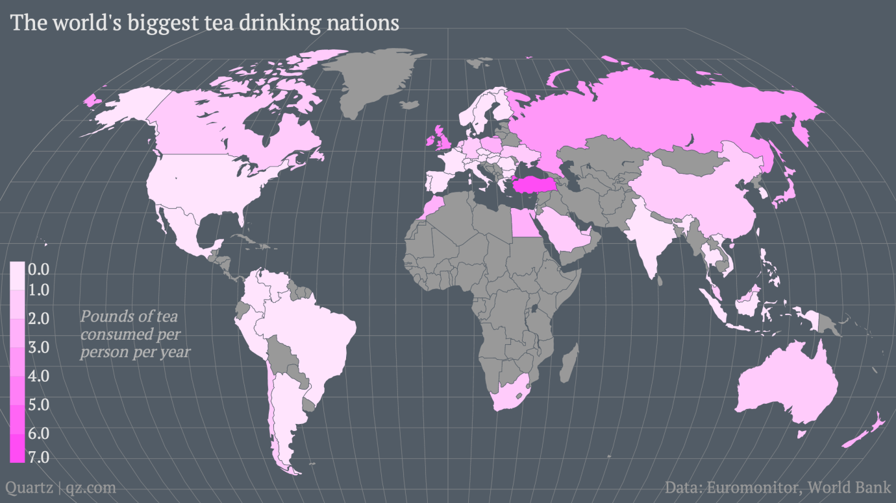
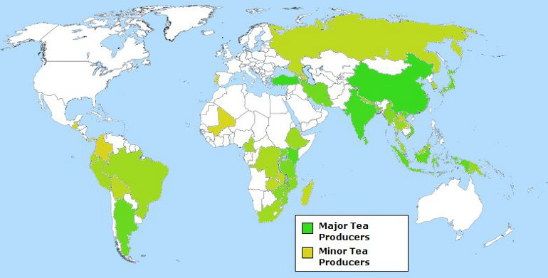

WORLD TEA CONSUMPTION
Tea is the most widely consumed beverage in the world after behind water. World tea consumption and is going to keep on rising in the
next few decades. Total tea consumption increased by nearly 5% in 2013 to 4.84 million tonnes, which was underpinned by the rapidgrowth in per capita income
levels, particularly in China, India and other emerging economies. Growth in demand was particularly marked in China. After a spectacular rise
in consumption in recent yearsexceeding 8% annually, total consumption increased by 9% in 2013, on a year-to-year basis, to reach 1.61million
tonnes, the largest in the world. In India, consumption expanded by 2.4% in 2009 and 6.6% in 2013 to reach 1 million tonnes. In 2016, total consumption was
2.9 million tons. Global consumption of tea is expected to reach 3.3 million tons in 2021 which is approximately 15%.
Though China and India are the largest consumer of tea, But per person, the picture is a lot different: Turkey, Ireland, and the United Kingdom are home to the world’s biggest tea drinkers.

Source: Quartz
TOP 10 TEA CONSUMING COUNTRIES PER CAPITA
| Rank |
Country |
Tea Consumption |
| 1 |
Turkey |
3.16 kg |
| 2 |
Ireland |
2.19 kg |
| 3 |
UK |
1.94 kg |
| 4 |
Iran |
1.50 kg |
| 5 |
Russia |
1.38 kg |
| 6 |
Morocco |
1.22 kg |
| 7 |
New Zealand |
1.19 kg |
| 8 |
Chile |
1.19 kg |
| 9 |
Egypt |
1.01 kg |
| 10 |
Poland |
1 kg |
WORLD TEA PRODUCTION
Tea plantations vary in size. Worldwide 5,966,467 tonnes of tea is produced per year,
where China and India are the largest and second largest tea producer in the world
with 2,414,802 tonnes and 1,252,174 tonnes production volume per year. China and India produce together more than 60% of World's total. While most of Indian and Sri Lankan production of tea comes from large plantations
(hundreds of acres),
most of the production of China and Japan comes from small holders. Asia and Africa account for bulk of the world tea production.
India, China and Sri Lanka are the chief producers of tea in Asia.Tea is a major cash crop of Kenya in
Africa. The mountain slopes and other uplands in this country provide conditions suitable for tea plantations.

Source: FAO
TOP 10 TEA Producing COUNTRIES
| Rank |
Country |
Annual Production(Tonnes) |
| 1 |
China |
2,414,8023.16 |
| 2 |
India |
1,252,174 |
| 3 |
Kenya |
473,000 |
| 4 |
Sri Lanka |
349,308 |
| 5 |
Turkey |
243,000 |
| 6 |
Vietnam |
240,000 |
| 7 |
Indonesia |
144,015 |
| 8 |
Argentina |
89,609 |
| 9 |
Japan |
80,200 |
| 10 |
Iran |
75,000 |
GLOBAL MARKET
Tea were the world's 393rd most traded product, with a total trade of $7.44B.
Trade in Tea represent 0.041% of total world trade.Between 2018 and 2019 the exports of Tea decreased by -6.33%, from $7.94B to $7.44B.
Exports:
In 2019 the top exporters of Tea were China ($1.77B), Kenya ($1.13B), India ($848M), Sri Lanka ($811M), and United Arab Emirates ($311M).
Imports:
In 2019 the top importers of Tea were Pakistan ($601M), United States ($489M), Russia ($410M), Hong Kong ($374M), and United Kingdom ($324M).
TOP TEA BRANDS IN THE WORLD
| Rank |
Brand |
Country |
| 1 |
Lipton |
UK |
| 2 |
Nestle |
Switzerland |
| 3 |
Tata |
India |
| 4 |
Tazo and Teavana |
USA |
| 5 |
Dilmah |
Sri Lanka |